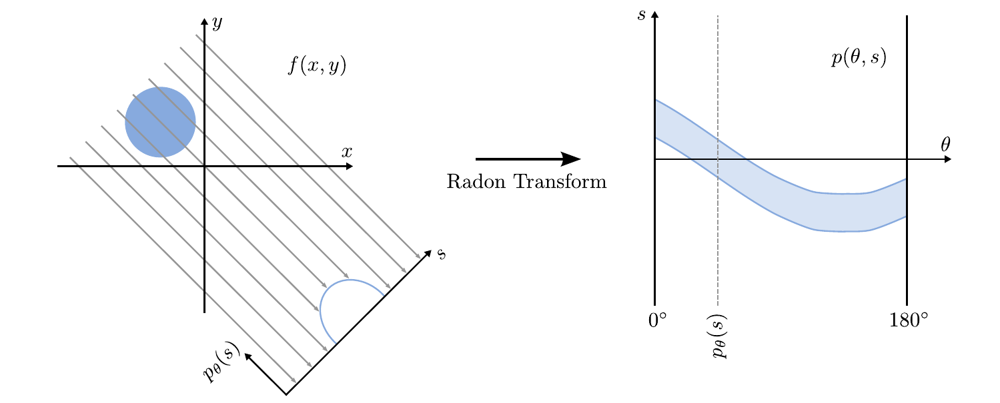

Backprojection
If we have a look at the sinogram values corresponding to one detector position we get some information about the projected object. For instance, we can see the profile of the projected circle in the following image.

However, if we have no access to the original volume slice we can not tell anything about the distance of the object to the detector. All the following situations would generate the same projection!
So apparently, we get some information in the direction of the detector plane, but all information orthogonal to the detector plane is lost. So one thing that we can do if we want to perform a reconstruction from the sinogram is to take the information in direction of the detector plane and uniormly smear it into the direction orthogonal to the detector plane in a range where we assume the object is located. We call this process backprojection.
| The backprojection smears the value of the projection uniformly over the paths of the rays |
Use the following method, that is calculating the value that we want to smear back.
// in mt.Projector
public float backprojectRay(mt.Image sinogramSlice, int angleIdx, float s) {
sinogramSlice.setOrigin(0.f, -sinogram.physicalHeight * 0.5f);
return sinogramSlice.interpolatedAt(angleIdx * sinogram.spacing, s) // * sinogram.spacing is necessary because spacing is not valid for our angle indices (actually each coordinate should have their own spacing. That's the revenge for us being lazy.).
/ (volume.physicalWidth() * Math.sqrt(2)) // we guess that this is the size of our object, diagonal of our slice
/ sinogramSlice.width() // we will backproject for each angle. We can take the mean of all angle position that we have here.
;
}
Use this method in backprojectSlice to backproject for each pixel x, y a horizontal line of the sinogram (all possible angles).
// in mt.Projector
public void backprojectSlice(int sliceIdx)
// A helper method
public void backprojectSlice(int sliceIdx, int angleIdx)
To do this
- Create a loop over all
angleIdx- Call the helper method for all angle indices (there are
sinogram.widthangles)
- Call the helper method for all angle indices (there are
- In
public void backprojectSlice(int sliceIdx, int angleIdx)- Get the slice with index
sliceIdx - Loop over all
x,yof this image - Calculate the physical coordinates from the integers
xandy(timesspacingplusorigin!) - Calculate the actual angle
thetafrom theangleIdx - Calculate
sfrom the physical coordinate.sis the physical distance of the point $\vec{x}$ from the ray through the origin at angletheta.- Can you write down the line equation for this line?
- Can you use the line equation to calculate the distance of $\vec{x}$ an the line through the origin?
- Call
backprojectRaywithangleIdxands - Add this result of
backprojectRayto current value at positionx,yand save the sum at that position
- Get the slice with index
Reconstruction
Next, we want to try out whether we can use our backprojection to reconstruct a volume. Whenever we want to test whether a method works, we need something to compare it with. The best possible result, the "true" values, is usally called ground truth. We can use one of the reconstructions that we downloaded from the Cancer Imaging Archive as a ground truth volume. The best possible result for our reconstruction is to come as close as possible to the original (ground truth) volume.
Create a file src/main/java/project/GroundTruthReconstruction.java.
// Your name <your idm>
package project;
import mt.Projector;
import mt.Volume;
class GroundTruthReconstruction {
public static void main(String[] args) {
(new ij.ImageJ()).exitWhenQuitting(true);
}
}
It's important that we never mix up the ground truth with the results of our algorithm.
Create therefore an instance of Projector that will have the task to simulate projections.
You can call it groundTruthProjector.
Open a test volume and create an empty (all pixels 0) sinogram. They are needed to call the constructor of Projector.
Call groundTruthProjector.projectSlice with an arbiray slice index.
Create an empty volume (all pixels 0) with the same dimensions as the ground truth volume and a copy of groundTruthProjector.sinogram().
You can add the following method to mt.Volume to create copies.
// in mt/Volume.java
public Volume clone(String name) {
Volume result = new Volume(width(), height(), depth(), name);
IntStream.range(0, depth()).forEach(z-> result.getSlice(z).setBuffer(Arrays.copyOf(slices[z].buffer(), slices[z].buffer().length)));
return result;
}
Create a new projector reconstructionProjector with the empty volume and the copy of our sinogram.
Use backprojectSlice(...) to create your first reconstruction of a slice.
A good way to test your implementation is to incremently apply more and more backprojections on your reconstruction.
When you calculated the sinogram for SLICE_IDX you can use
// in project.GroundTruthReconstruction.java
// Choose the slice in the middle. Hopefully showing something interesting.
final int SLICE_IDX = ????; // < Use a index for which you already calculated `projectSlice`
for (int i = 0; i< projector.numAngles(); i++ ) {
try {
TimeUnit.MILLISECONDS.sleep(500);
} catch (InterruptedException e) {
e.printStackTrace();
}
projector.backprojectSlice(SLICE_IDX, i);
projector.volume().getSlice(SLICE_IDX).show();
//// Optionally save the intermediate results to a file:
//DisplayUtils.saveImage(projector.volume().getSlice(SLICE_IDX), "/media/dos/shepp_9_"+i+".png");
}
This will wait 500ms between each backprojection. Do your rays meet at the right points? Use a simple test image with only a single white circle if not. This should help you debug the issue.
| Backprojection using 9 views | Backprojection using 100 views |
|---|
Project Report
For the project report, you should briefly describe your backprojection reconstruction algorithm.
- Describe your implementation, create at least one figure supporting your explanations. You should never mention implementation details like for-loops or variable names, but important parameters like the number of projection angles you used
- Test your reconstruction algorithm
- using a simple test image like a white circle or square
- using a CT reconstruction that you downloaded . Cite the data source!
- How do images look like? If they are blurry, what is the reason for that. Show the images in your project report. Mention in one sentence how the Filtered Backprojection algorithm tries to solve that problem.
- How big are your errors in comparison to the ground truth? If you are using a measure like the Mean Squared Error give a formula defining it.
The content for this section should be about one page long.